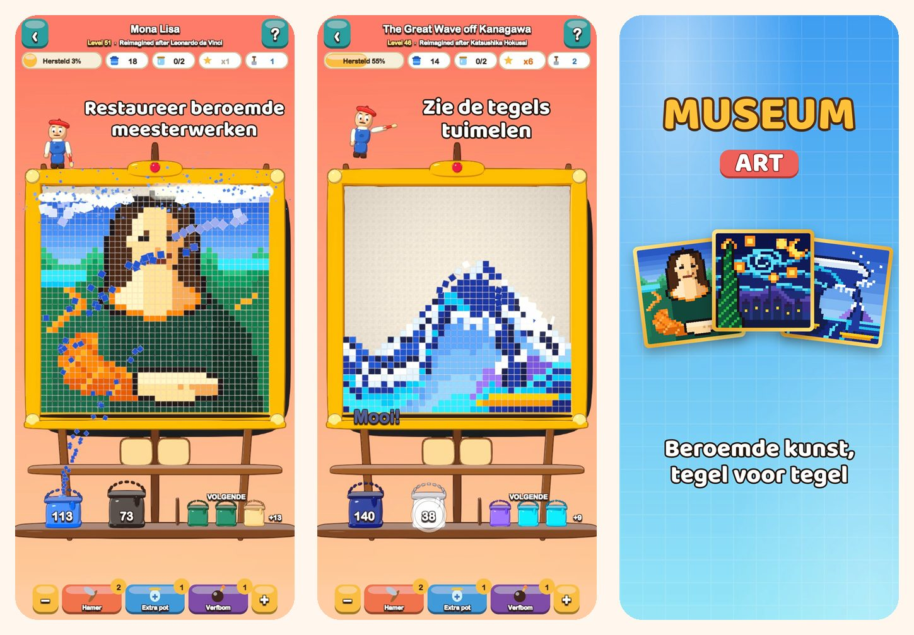

Museum Art
Kleurenpuzzel in pixelart
Tik op een kleur en zie de tegels tuimelen. Restaureer 51 afbeeldingen in pixelart, van de Mona Lisa tot Istanbul, Parijs, Rome en New York.
Download in de App Store
Over het spel
Elke afbeelding in Museum Art bestaat uit kleurige, vierkante tegels. Haal ze kleur voor kleur weg en zie de afbeelding weer stralen.
ZO SPEEL JE
- Tik op een kleurvlak dat de onderste rij raakt, of op een emmer op de plank: de tegels vliegen naar hun emmer.
- De tegels erboven glijden als zand omlaag en openen nieuwe zetten.
- Nog geen emmer voor een kleur? Zet hem in een pot op het wachtblad.
- Gebruik het wachtblad minder en verdien meer sterren.
51 AFBEELDINGEN OM TE RESTAUREREN
- Vrolijke, makkelijke plaatjes om mee te beginnen: een luchtballon, een zeilboot, een kat en een vuurtoren.
- Natuur: besneeuwde toppen, een bergmeer, kersenbloesem en een woestijn in de schemering.
- Een wereldreis langs Istanbul, Parijs, Rome en New York.
- De Kluis van de Meesters: De grote golf, De sterrennacht, Waterlelies, Het melkmeisje, Impressie, zonsopgang en de Mona Lisa, opnieuw verbeeld in pixelart.
ONTSPANNEN EN EERLIJK
- Elk level is zonder boosters op te lossen, en opnieuw proberen is gratis.
- Boosters voor lastige momenten: Hamer, Extra pot en Verfbom.
- Zoom in op de details wanneer je wilt.
- Bij elke afbeelding hoort een leuk weetje.
- Speelbaar in 19 talen.